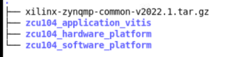
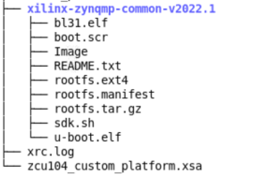
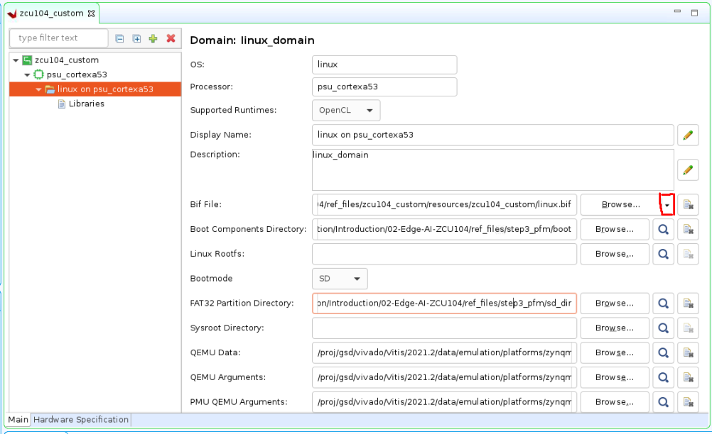
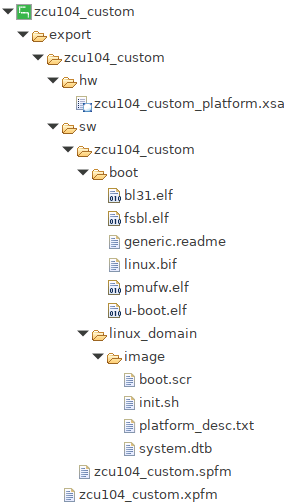

Step 2: Create Vitis Software Platform¶
In this step, we will create a Vitis platform running Linux operation system. The Vitis platform requires several software components which need to be prepared in advance. Since Xilinx provides common software images for quick evaluation. Therefore we will utilize the common image for a quick start. DTB file is not prepared in the common image package as different platforms have different device peripherals. So we will use createdts command to generate the device tree file for our platform. Certainly, if you need to customize the system image like kernel or rootfs you can refer to the PetaLinux customization page for customization. Below are the software components we need for our platform and its provenance.
| Component | Conventional Path or Filename | Description | Provenance |
|---|---|---|---|
| Boot components in BOOT.BIN | boot/fsbl.elf | First stage boot loader | Generated with platform creation |
| Boot components in BOOT.BIN | boot/pmufw.elf | Chip internal power and security related management | Generated with platform creation |
| Boot components in BOOT.BIN | boot/bl31.elf | ARM trusted firmware/ secure monitor | Extracted from common image |
| Boot components in BOOT.BIN | boot/u-boot.elf | Second stage boot loader | Extracted from common image |
| Boot components in BOOT.BIN | boot/system.dtb | Device tree information file | Generated from "createdts" command |
| Boot components in FAT32 partition of SD card | sd_dir/boot.scr | U-boot configuration file to store in FAT32 partition of SD card | Extracted from common image |
| Linux Software Components | sw_comp/Image | Linux kernel Image | Extracted from common image |
| Linux Software Components | sw_comp/rootfs.ext4 | Linux file system | Extracted from common image |
| Linux SDK | sysroot | Cross compile and header files | Extracted from common image |
As most of the components are extracted from the common image package we will prepare the common image first.
Prepare the common images¶
Download common image from Xilinx website download page. go to the WorkSpace folder we created in step1 and Place the image package in WorkSpace folder like below:
cd WorkSpace tree -L 1 # to see the directory hierarchy

Extract the common image.
We will create one folder named zcu104_software_platform to store the work content for this step2. Then the coming operations and products will be stored in this folder.
mkdir zcu104_software_platform cd zcu104_software_platform tar xvf ../xilinx-zynqmp-common-v2022.1.tar.gz -C .you can see xilinx-zynqmp-common-v2022.1 folder which contains some components located in zcu104_software_platform folder like below.

From the above picture, you can see boot file, kernel image, rootfs and SDK tool are ready. DTB and first stage boot related files are not available. Since Vitis can generate FSBL and PMU firmware by enabling the option of Generate boot components when creating a platform. We will create a Vitis platform and enable the option of Generate boot components to generate the FSBL and PMU firmware.
Create FSBL and PMU firmware¶
As mentioned above we will create a Vitis Platform to obtain FSBL and PMU firmware. Using Vitis IDE and XSCT command both are capable of creating this platform. However, Vitis IDE can only support one XSA file as input. If your design has two XSA (hw and hw-emu), please use XSCT to create the platform.
Click here to expand the detailed steps using Vitis IDE to create a Vitis platform
Launch Vitis IDE
Prepare Vitis environment
source <Vitis_tool_install_dir>/settings64.shLaunch Vitis by typing
vitis &in the console.Select
zcu104_software_platformfolder as workspace directory.
Create a new platform project
Select menu File > New > Platform Project to create a platform project.
Enter the project name. For this example, type
zcu104_custom_fsbl. Click Next.In the Platform page,
Click Browse button, select the XSA file generated by the Vivado. In this case, it is
zcu104_custom_platform_hw.xsa.Set the operating system to standalone.
Set the processor to psu_cortexa53_0.
Set the architecture to 64-bit.
Check the option Generate boot components, because the auto generated FSBL and PMU firmware are our goals.
Click Finish.
Click zcu104_custom_fsbl project in the Vitis Explorer view, click the Build button to generate the platform.
After building we can get FSBL and PMU firmware.
Click here to expand the detailed steps using XSCT to create a Vitis platform
Create a tcl file with XSCT commands. For example, here is the parts of xsct_create_pfm.tcl
setws .
#set OUTPUT platform_repo
platform create -name $platform_name \
-desc "A custom platform ZCU104 platform" \
-hw ${xsa_path}/${xsa_name}_hw.xsa \
-hw_emu ${xsa_path}/${xsa_name}_hwemu.xsa \
-fsbl-target psu_cortexa53_0 \
# -out ./${OUTPUT}
# standalone domain
domain create -name standalone -proc psu_cortexa53_0 -os standalone -arch {64-bit}
# Linux domain
#domain create -name xrt -proc psu_cortexa53 -os linux -arch {64-bit} -runtime {ocl} -sd-dir {./sd_dir} -bootmode {sd}
# domain active xrt
#domain config -boot {./boot}
#domain config -generate-bif
#domain config -qemu-data ./boot
platform write
platform generate
Note: Please replace the file name and directory name in the script with your project file location.
Note: If you don’t need to support hardware emulation, you can omit the option
-hw_emuand its value for the commandplatform create.
The platform create command needs the following input values:
-name: Platform name-hw: Hardware XSA file location-hw_emu: Hardware emulation XSA file location-out: platform output path #if you usesetwsto specify the workspace there is no need for this option-sd-dir: the directory that contains the files to be included in the FAT32 partition of the SD card image.-fsbl-target: specify the CPU core and generate corresponding FSBL and PMU image.
The domain command will setup a standalone domain or the Linux domain with SD boot mode. It will use files in ./sd_dir to form the FAT32 partition of the SD card image and files in ./boot directory to generate boot.bin.
You can pass the values to the script directly by replacing the variable with the actual value, or define them in the header of the tcl script, or pass the value to XSCT when calling this script.
Here’s an example of calling XSCT if you hardcode all contents in xsct_create_pfm.tcl.
xsct xsct_create_pfm.tcl
To support better generalization, the example Makefile and xsct_create_pfm.tcl in ref_files directory use variables to represent the file names and directory location. Please refer to them if you would like to get more programmability in your scripts.
In this step, we create a platform to get FSBL and PMU firmware. We will add all the components to the platform in the last step. The rest file we need to prepare is the DTB file.
Create the device tree file¶
Utilize XSCT tool to execute one command to generate device tree files:
cd zcu104_software_platform
xsct
Then execute createdts command in XSCT console like below:
createdts -hw ../zcu104_hardware_platform/zcu104_custom_platform.xsa -zocl -platform-name mydevice \
-git-branch xlnx_rel_v2022.1 -board zcu104-revc -compile
The createdts command needs the following input values:
-name: Platform name-hw: Hardware XSA file with path-git-branch: device tree branch-board: board name of the device. You can check the board name at/device_tree/data/kernel_dtsi. -zocl: enable the zocl driver support-compile: specify the option to compile the device tree
Notice below information would show in XSCT console. Please ignore the warning and that means you succeed to get system.dtb file which is located in <mydevice/psu_cortexa53_0/device_tree_domain/bsp>.
pl.dtsi:9.21-32.4: Warning (unit_address_vs_reg): /amba_pl@0: node has a unit name, but no reg property
system-top.dts:26.9-29.4: Warning (unit_address_vs_reg): /memory: node has a reg or ranges property, but no unit name
zynqmp.dtsi:790.43-794.6: Warning (pci_device_reg): /axi/pcie@fd0e0000/legacy-interrupt-controller: missing PCI reg property
pl.dtsi:27.26-31.5: Warning (simple_bus_reg): /amba_pl@0/misc_clk_0: missing or empty reg/ranges property
Note: Createdts is a command executing in XSCT console to generate device files. This command needs several inputs to generate the device tree files. Regarding the meaning of every option you can execute help command to check the details. Besides XSCT is a Console tool of Vitis. You can start it by typing
xsctin Linux terminal to start it according to above operation. Or, you can select menu **Xilinx > XSCT Console ** to start the XSCT tool after you launch Vitis.
Execute the following command to exit XSCT console.
exit
Update the Device tree¶
Device tree describes the hardware components of the system. createdts command can generate the device tree file according to the hardware configurations from XSA file. If there are any settings not available in XSA, for example, any driver nodes that don’t have corresponding hardware, or user have their own design hardware, User needs to add customization settings in system-user.dtsi.
Besides uboot in common image does not have default environment variables. So updating the bootargs manually is needed. A pre-prepared system-user.dtsi file which adds pre-defined bootargs is under ref_files directory. Please copy this file to device tree BSP directory and modify system-top.dts to include this file. Please update DTS and rebuild it according to the following steps.
Go to zcu104_software_platform directory.
cd zcu104_software_platform
cp system-user.dtsi mydevice/psu_cortexa53_0/device_tree_domain/bsp/
echo "#include \"system-user.dtsi\"" >> mydevice/psu_cortexa53_0/device_tree_domain/bsp/system-top.dts
Then rebuild the dts file
cd zcu104_software_platform/mydevice/psu_cortexa53_0/device_tree_domain/bsp/
gcc -I my_dts -E -nostdinc -undef -D__DTS__ -x assembler-with-cpp -o system.dts system-top.dts #preprocess the dts file because DTC command can not recognize the #include grammar
dtc -I dts -O dtb -o system.dtb system.dts # compile the dts
Then you can find the updated system.dtb file in <zcu104_software_platform/mydevice/psu_cortexa53_0/device_tree_domain/bsp/> directory.
After this step, all the components platform creation need is ready. Next we will attach all the components to our platform and build it.
Create Vitis Platform¶
First We will create four directories: pfm, boot, sd_dir sw_comp to store the components and copy files to these directories.
cd WorkSpace/zcu104_software_platform mkdir pfm mkdir pfm/boot mkdir pfm/sd_dir mkdir pfm/sw_comp cp zcu104_platform_fsbl/zynqmp_fsbl/fsbl_a53.elf pfm/boot/fsbl.elf #rename it to fsbl.elf in case of V++ can not find it by name cp zcu104_platform_fsbl/zynqmp_pmufw/pmufw.elf pfm/boot/ cp xilinx-zynqmp-common-v2022.1/bl31.elf pfm/boot/ cp xilinx-zynqmp-common-v2022.1/u-boot.elf pfm/boot/ cp mydevice/psu_cortexa53_0/device_tree_domain/bsp/system.dtb pfm/boot/ cp xilinx-zynqmp-common-v2022.1/boot.scr pfm/sd_dir/ cp mydevice/psu_cortexa53_0/device_tree_domain/bsp/system.dtb pfm/sd_dir/ cp xilinx-zynqmp-common-v2022.1/rootfs.ext4 pfm/sw_comp cp xilinx-zynqmp-common-v2022.1/Image pfm/sw_comp
Note: fsbl_a53.elf, pmufw.elf, bl31.elf, u-boot.elf and system.dtb in boot DIR are the source of BOOT.BIN image. Boot.src and system.dtb in sd_dir are for u-boot initialization and Linux boot up and will be packaged to FAT32 partition by V++ package tool. Image and rootfs.ext4 are Linux kernel and root file system and also will be packaged to SD.IMG by V++ tool.
Install the sysroot
Go to common image extracted directory <WorkSpace/zcu104_software_platform/xilinx-zynqmp-common-v2022.1/>
Type ./sdk.sh -d
to install PetaLinux SDK. use the -doption to provide a full pathname to the output directory . (This is an example. < . > means current Dir ) and confirm.Note: The environment variable LD_LIBRARY_PATH must not be set when running this command
Create Vitis platform
This time we will use IDE to create Vitis Platform. if you want to use XSCT to create platform please check Using XSCT to create Vitis Platform.
Open Vitis workspace you were using before in step2
Select menu File > New > Platform Project to create a platform project.
Enter the project name. For this example, type
zcu104_custom. Click Next.In the Platform page,
Click Browse button, select the XSA file generated by the Vivado. In this case, it is
zcu104_custom_platform_hw.xsa.Set the operating system to linux.
Set the processor to psu_cortexa53.
Architecture: 64-bit
uncheck option Generate boot components, because we have got FSBL and PMU already.
Click Finish.
Set up the software settings in Platform Settings view
Click the linux on psu_cortexa53 domain, browse to the locations and select the directory or file needed to complete the dialog box for the following:
Bif file: Click the drop-down icon and select Generate BIF.
Note: The file names in
<>are placeholders. Vitis will replace the placeholders with the relative path to platform during platform packaging. V++ packager, which runs when building the final application would expand it further to the full path during image packaging. Filename placeholders point to the files in boot components directory. The filenames in boot directory need to match with placeholders in BIF file.<bitstream>is a reserved keyword. V++ packager will replace it with the final system bit file.Boot Components Directory: Browse to zcu104_software_platform/pfm/boot and click OK.
FAT32 Partition Directory: Browse to zcu104_software_platform/pfm/sd_dir and click OK.
QEMU Data: Browse to zcu104_software_platform/pfm/boot and click OK.

Note: Setting QEMU DATA to boot components directory would help emulator to find the boot components during Linux boot when doing emulation.
Note: If there are additional QEMU settings, please update qemu_args.txt accordingly.
Click zcu104_custom project in the Vitis Explorer view, click the Build button to build the platform.

Note: The generated platform is placed in the export directory. BSP and source files are also provided for rebuilding the FSBL and PMU if desired and are associated with the platform. The platform is ready to be used for application development.

If you’d create an Vitis application in the same workspace as this platform, you can find this platform available in the platform selection page in platform creation wizard. If you’d like to reuse this platform in another workspace, add its path to PLATFORM_REPO_PATHS environment variable before launching Vitis GUI, or use “Add” button in platform selection page of Vitis GUI to add its path.
Fast Track¶
Scripts are provided to create the Vitis platform. To use these scripts, please run the following steps.
Run build
Note: Please download common image from Xilinx website download page. and give its path to the following command.
# cd to the step directory, e.g. cd step2_pfm make all COMMON_IMAGE_PATH=<path/to/common_image/>
To clean the generated files, please run
make clean
Next Step¶
Next let’s try to build some applications on this platform and test them.
Copyright© 2022 Xilinx